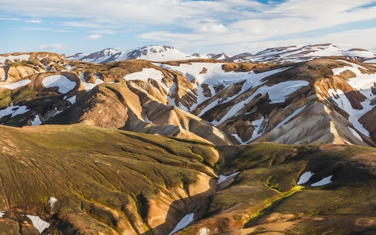
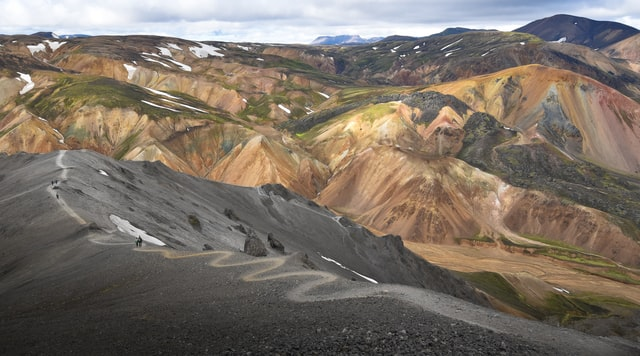
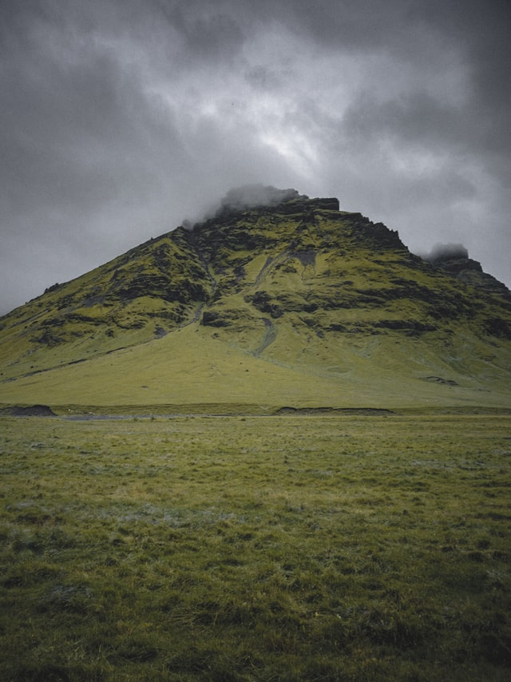

6 - day hike Laugavegur to Fimmvorduhals 4 - 7 hours per day 77 km totaly Difficulty 4/5 well-traveled, well-signed max. ascent 800m 
4 - day hike Landmannalaugar to Thorsmor 4 - 7 hours per day 55 km totaly Difficulty 3.5/5 well-traveled, well-signed max. ascent 490m 
2 - day hike Skógar to Thórsmörk 5 - 7 hours per day 25 km totaly Difficulty 2/5 well-traveled, well-signed max. ascent 475m 
 4 - 7 hours per day
4 - 7 hours per day max. ascent 800m
max. ascent 800m